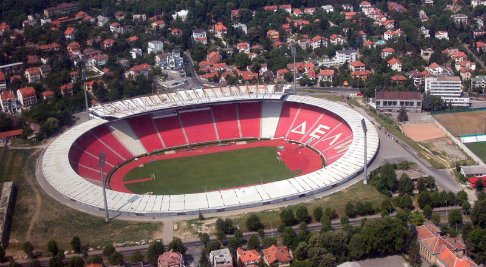
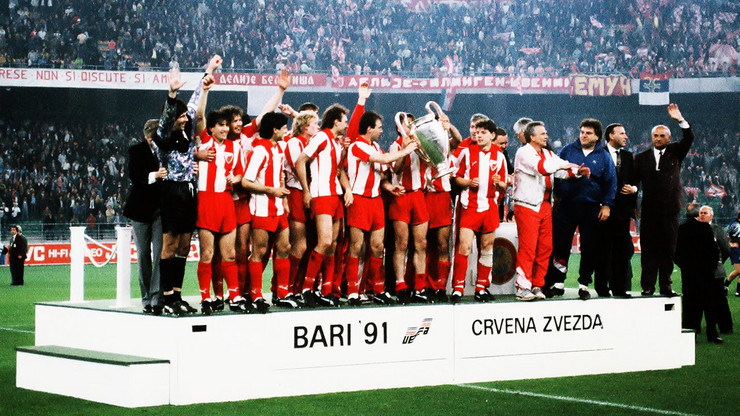

ФК Црвена звезда је српски фудбалски клуб из Београда и део је СД Црвена звезда. Црвена звезда је најтрофејнији фудбалски клуб у Србији освојивши укупно 56 титула, укључујући 28 домаћих шампионата, 24 национална купа, два Митропа купа, један Куп шампиона и један Интерконтинентални куп. Највећи успех постигнут је 1991. године када осваја Куп европских шампиона у Барију и Интерконтинентални куп у Токију исте године. Било је то највеће достигнуће Црвене звезде и било ког српског, а тада и југословенског фудбалског клуба. Поред тог успеха у европским такмичењима, издваја се и финале Купа УЕФА 1979, где су поражени од Борусије из Менхенгладбаха.
Игра на свом стадиону који од 2014. носи име по легенди Црвене звезде Рајку Митићу, са капацитетом од 55.538 седећих места. Стадион је међу домаћом публиком познат као Маракана по називу истоименог стадиона у Бразилу, иако му то никад није био званичан назив. Према већини истраживања Црвена звезда је најпопуларнији клуб у Србији и Београду. Такође веома је популаран готово у свим суседним државама али и међу српском популацијом широм света. Клуб има дугогодишње ривалство са Партизаном. Од 2011. године постоји и женски клуб Црвене звезде.
Док је Други светски рат још увек трајао, у ослобођеним деловима земље извршена је целокупна реорганизација спортског живота. Велики број предратних клубова је престао да постоји, те су уместо њих оснивани нови. Један од најпознатијих фудбалских клубова који је тада угашен била је београдска Југославија.
Током фебруара 1945. године омладинци, чланови Уједињеног савеза антифашистичке омладине Србије, почели су припреме за оснивачку скупштину једног омладинског фискултурног друштва, са циљем да буде састављено од разних спортских секција.[6] У духу тог времена носило је назив Омладинско–фискултурно друштво (ОФД) које је 4. марта прерасло у Црвену звезду.[6][7] Иницијатива за оснивање спортског друштва потекла је од Зорана Жујовића и Слободана Ћосића, а међу оснивачима су још били и Небојша Поповић, Светозар Глигорић, Мира Петровић и Милован Ћирић. Новооснованом клубу су тада припали стадион,[8] и клупске просторије СК Југославије, а стицајем околности боја клуба је била иста као и боја клуба свеже угашене СК Југославије, али са тотално другачијим конотацијама. Црвена звезда нема никаквих додирних тачака са СК Југославијом те се не може сматрати никаквим наследником истог клуба, а главни разлог је чињеница да је Црвена звезда устројена према тзв. совјетском фискутлурном (спортском) моделу. Тим је добио име после дуге расправе између тадашњих потпредседника спортског друштва Слободана Ћосића и Зорана Жујовића. После бројних предлога (Младост, Ударник, Торпедо, Динамо, Локомотива итд.), најзад је Ћосић рекао: „Да наше друштво назовемо Звезда!“, на шта је Жујовић спонтано додао: „Одлично, само, кад је Звезда - нека буде црвена.“ Са овим предлогом сви присутни су се са задовољством сложили, мада је било предлога да се клуб назове и Плава звезда. Одређене су и боје: црвено-плаво-бело са белом петокраком звездом на црвеној подлози дреса. Прво руководство клуба су чинили Ђорђе Паљић који је био председник, Зоран Жујовић и Слободан Ћосић који су обављали функције потпредседника, Љубиша Секулић је био секретар, економ Предраг Ђајић, а вођа фудбалске секције је био Коста Томашевић.
Прва утакмица је одиграна против Првог батаљона Друге бригаде КНОЈ-а. Звезда је добила тај меч са 3-2, а стрелац првог гола је био Коста Томашевић.[6][7][11] Утакмица је одиграна на стадиону „Авала“ (бивше игралиште СК Југославије) пред око 3000 гледалаца.[12] Седам дана касније Звезда је играла против играча британске армије и победила са 12:0.
Током 1945. године клуб је одиграо око 36 мечева. Црвена звезда је забележила победе у 30 мечева, играла нерешено 5 и изгубила један меч од Румуније у Темишвару 23. септембра 1945. године.
Након прве четири сезоне без иједног освојеног трофеја, Црвена звезда је освојила Куп Југославије 1948. победом од 3:0 у финалу над Партизаном. Тај успех је поновљен и у наредне две године, победама у финалима прво над Нашим крилима (3:2), а затим и над загребачким Динамом (3:0). Низ великог успеха је настављен и 1951. када је клуб по први пут постао првак Југославије. Иако се на само три кола пред крај првенства чинило да је првенство решено јер је Динамо имао пет бодова више у односу на Звезду, а тада су се за победу добијала два бода. Прво је Звезда искористила пораз Загрепчана од Сарајева, а затим их је и међусобном дуелу савладала. На тај начин им је пред последње коло пришла на само бод заостатка. У том последњем колу БСК је успео да Динаму узме бод, а Црвена звезда је успела да добије Партизан са 2:0. О титули првака је одлучила боља гол-разлика која је била на страни Звезде.
Како то обично бива, када велики тренер оде, то подразумева пад у резултатима, а две сезоне након одласка Миљанића су прошле мање успешно за Звезду. Тек по доласку Гојка Зеца на позицију тренера клуб се стабилизовао и Црвена звезда је 1977. поново славила освајање титуле националног првака. Био је то увод у еру Бранка Станковића, чија је владавина као главног тренера трајала четири године, а у којој је Црвена звезда освојила три трофеја и играла прво велико европско финале. Након што је Драган Џајић прешао у Бастију, тим су предводили четврта „Звездина звезда“ Владимир Петровић Пижон, Душан Савић и Милош Шестић.
Прва сезона са Гојком Зецом на челу је била буквално права демонстранција силе, титула је освојена са предношћу од 9 бодова у односу на ривале, што је, до тада, била највећа разлика у историји лиге. Звездини нападачи, предвођени Зораном Филиповићем, постигли су 67 голова против њихових ривала у лиги (следећи на листи иза њих је био бањалучки Борац са 53 постигнутих голова). У наредној сезони, Црвена звезда је освојила друго место у првенству, чиме је отворен пут за велики наступ у сезони 1978/79. Купа УЕФА. Након што је избацила тимове као што су Арсенал, Вест Бромвич албион и Херта Берлин, Црвена звезда је по први пут заиграла у финалу неког европског такмичења. А тамо, Црвена звезда се састала са Борусијом Менхенгладбах, која је одиграла пет европских финала од 1973—1980. Немце је у првом мечу у Београду дочекало око 90 хиљада навијача, и Црвена звезда је добро кренула голом Шестића у 21. минуту, али је Јуришић аутоголом у 60. минуту дао Борусији психолошку предност пред реванш. Ова утакмица је одиграна на Рајн стадиону у Диселдорфу, где је италијански судија Микелоти досудио спорни пенал за Немце у 15. минуту, а дански фудбалер Алан Симонсен је запечатио судбину Црвене звезде. Борусија је тако у финалном двомечу победила укупним резултатом 2:1.
Станковић је прву титулу првака као тренер (као играч је четири пута био првак) освојио 1980, док је Звезда у финалу Купа поражена од загребачког Динама па јој је измакла дупла круна, а наредне сезоне титула у првенству је одбрањена. Период од једанаест година без трофеја у Купу, убедљиво најдужи у клупској историји, завршио се у пролеће 1982, када је Црвена звезда у финалу победила Динамо Загреб укупним резултатом 6:4 (2:2 у Загребу и 4:2 у Београду). До тада, догодила се прва промена тренера током сезоне још од педесетих, Стеван Остојић је заменио Станковића. У овом периоду, Црвена звезда је два пута стизала до четвртфинала Купа европских шампиона. Године 1981. ту ју је зауставио милански Интер, а 1982. Андерлехт.
Гојко Зец се 1983. вратио у клуб, затекавши само једног играча из шампионске генерације коју је тренирао 1977 – Милош Шестић. Зец је слично понови успех из његовог претходног мандата, освојивши титулу у првој сезони. Наредну сезону 1984/85. Црвена звезда је завршила на четвртом месту на табели, док је након три године поново освојила Куп, победивши у финалу Динамо Загреб. Посебно након што су Петровић и Савић отишли током сезоне 1982/83, Шестић је постао лидер нове генерације, чији су играчи били Ивковић, Елснер, Бошко и Милко Ђуровски, Мусемић, Миловановић, Јањанин и Мркела. Крај ере Гојка Зеца поклопио се са највећим скандалом у историји југословенског фудбала, Шајберовим случајем, због којег је држава имала два првака у једној сезони. Црвена звезда је прво изгубила па поново освојила титулу 1986, пре него што јој је одузета за зеленим столом. Црвена звезда је исте сезоне стигла и до четвртфина Купа победника купова, где је поражена од Атлетико Мадрида.
Планови везани за европске успехе Звезде и њено јачање у Европи почели су да се спроводе средином 1980-тих година. Звезда је до тада играла солидно против иностраних тимова. Играчи који су чинили први тим су били из омладинског тима или су довођени из мањих клубова у земљи. Тадашњи руководећи људи клуба Драган Џајић и Владимир Цветковић донели су одлуку да треба постојећим омладинцима прикључе најквалитетније домаће играче. Тиме би Црвена звезда могла да парира најјачим европским тимовима и да буде кандидат за европске трофеје.
Већ 1986. године креће реализација њиховог плана, и прва појачања у Звезди су били Борислав Цветковић и Миливој Брачун из Динама, а из нишког Радничког дошао је Драган Стојковић Пикси. Године 1987. у Црвену звезду стижу Драгиша Бинић и Роберт Просинечки. Дејан Савићевић и Дарко Панчев долазе 1988. године. Белодедић се прикључује клубу из румунске Стеауе 1989. године али право наступа стиче тек у пролеће 1990.
У сезони (1988/1989) Црвена звезда је играла против италијанског Милана (који је те сезоне постао европски првак), где су обе утакмице завршене нерешеним резултатом 1-1 а Милан је прошао на пенале.[18] У домаћем првенству шампион је постала новосадска Војводина. Тако је Црвена звезда у сезони 1989/1990 играла у Купу УЕФА где је трећем колу испала од Келна укупним резултатом 3-2.
Лета 1990. године Драгослава Шекуларца дотадашњег тренера који је освојио титулу државног првака мења Љупко Петровић. Тиму се поново прикључује и Владимир Југовић који је до тада био на позајмици у Раду. Међутим Звезду напушта њен дотадашњи капитен Драган Стојковић који одлази у Олимпик из Марсеља,[21] тима са којим ће Звезда играти у финалу КЕШ-а наредне године. Највеће појачање стиже из Војводине, Синиша Михајловић, чији је траннсфер био рекордан у тадашњој Југославији. Поход на светски врх могао је да почне.
 Црвена звезда је у поход на Куп европских шампиона кренула са великим амбицијама. У претходних четрнаест година редовно је играла у Европи и на пролеће. У то време била је један од најбољих тимова из источне Европе.
У Купу шампиона те сезоне најјачи тимови су били Бајерн Минхен, Реал Мадрид и Милан. У првом колу Црвена звезда је добила швајцарски тим Грасхоперс, који је био предвођен Отмаром Хицфелдом (освојио Лигу шампиона са Борусијом Дортмунд (1997) и Бајерном (2001)). У првом мечу на београдској Маракани било је 1:1 (Петер Кецле - Драгиша Бинић). У другом мечу у Цириху Црвена звезда је убедљиво победила са 1:4 (Кецле- Просинечки (2 гола), Панчев, Радиновић). У следећем двомемечу Црвена звезда је играла против шкотског тима Глазгов Ренџерс.[23] У првом дуелу било је 3:0 за Звезду (Браун аутогол, Роберт Просинечки, Дарко Панчев). У другом мечу на стадиону Стадион Ајброкс било је 1:1 (Меккоист - Панчев) тако да је Црвена звезда прошла даље и поново дочекала пролеће у Европи.
Тада је у четвртфиналу извучен тим из Источне Немачке, Динамо Дрезден.[24] Први меч се опет играо у Београду и Звезда га је добила са 3-0 (Просинечки, Бинић, Савићевић). У другом мечу дошло је до инцидента који су изазвали навијачи домаћег тима тако да је УЕФА регистовала тај меч са 3-0 у Звездину корист и тако се српски клуб пласирао у полуфинале. До прекида Звезда је водила са 1-2 (Гичов- Савићевић, Панчев).
У полуфиналу извучен је Бајерн Минхен а у другој утакмици су играли Олимпик Марсељ и Спартак Москва. У првом мечу који је игран на Олимпијском стадиону у Минхену било је 1-2 за Црвену звезду (Волфарт- Панчев, Савићевић). Друга утакмица на Маракани остаће упамћена као један од најнеизвеснијих дуела које је Звезда одиграла на свом стадиону. Резултат је на крају био 2-2 (Михајловић, Аугенталер (аутогол) - Аугенталер, Бендер).
Највећи успех Црвене звезде је везан за 1991. када је 29. маја у италијанској луци Бари постала први клуб из Југославије (тадашње СФРЈ) који је освојио наслов првака старог континента. Утакмица је играна на тада новом Стадиону Свети Никола који је изграђен за потребе Светског првенства у фудбалу које је одржано 1990. године.
Након победе над Бајерном из Минхена, тим се у потпуности окренуо утакмици финала коју је Звезда играла против Француског шампиона Олимпика из Марсеља. Екипа је отпутовала у Италију недељу дана пре меча. Ово је омогућило да се тим спреми у миру и тишини. Од саме утакмице се очекивало да ће бити офанзивна зато што је Звезда за дотадашњих 8 утакмица дала 18 голова а Марсељ је постигао 20 голова на истом броју мечева. Међутим тренери оба тима су се одлучили за дефанзивну тактику.
Регуларни део меча завршен је резултатом 0:0. Затим су се играли продужеци где такође није било голова. Потом се приступило пеналима. За Црвену звезду шутирало пет играча и сви су погодили мрежу (Роберт Просинечки, Драгиша Бинић, Миодраг Белодедић, Синиша Михајловић и Дарко Панчев).[28] За француски тим је шутирало четири играча. Играчи Црвене звезде су први шутирали пенале. За Марсељ је први пенал шутирао Мануел Аморос и промашио, тако да пети играч за Олимпик није ни могао да шутира после погодка Дарка Панчева и резултата 5:3 (Мануел Аморос-промашио пенал, Бернар Казони, Жан-Пјер Папен, Карлос Мозер). Црвена звезда је победила са 5:3 после бољег извођења једанестераца. То је значило да је заједно са румунском Стеауом постала једини тим из источне Европе који је до данас освојио ово такмичење.
Црвена звезда је 8. децембра исте године на Националном стадиону у Токију победила чилеански клуб Коло-Коло резултатом 3:0 и постала фактички клупски првак света, јер није било другог такмичења који би објединио у то време најјаче екипе на свету. Након успеха у Барију тим је напустио значајан број играча (Бинић, Маровић, Просинечки, Шабанаџовић, Стојановић) као и тренер Љупко Петровић. Међутим Црвена звезда је још увек имала завидан играчки кадар. Црвена звезда је друго полувреме играла без Дејана Савићевића који је искључен у 43. минуту. Иако ослабљена, Звезда је забележила убедљиву победу од 3:0. Голове су постигли Владимир Југовић. два (19. и 59. минут) и Дарко Панчев (72. минут).
Црвена звезда је играла у саставу: Милојевић, Радиновић, Најдоски, Стошић, Васиљевић, Југовић, Белодедић, Ратковић, Панчев, Михајловић, Савићевић. Тренер је био Владица Поповић.
Лето 1999. године означава нови почетак за клуб. Након завршетка рата на Космету, Црвена звезда осваја свој седамнаести куп у историји победом против Партизана 4:2. Међутим, после лошег старта у следећој сезони, Милољуб Остојић бива смењен, а тим преузима Славољуб Муслин. Као члан добре генерације играча са почетка осамдесетих за коју су наступали Владимир Петровић Пижон и Дуле Савић, он је донео нову филозофију у екипи Црвене звезде. Током две сезоне проведене у Звезди, постављен је рекорд, где је број примљених голова преполовљен. Црвена звезда је примила само 19 голова на 40 утакмица у првенству (сезона 1999-2000). Титула првака практично је освојена на Ђурђевдан, када је Обилић поражен на „Маракани“, а Партизан је у том колу успео да освоји само један бод против Радничког из Крагујевца. У марту, априлу и мају Црвена звезда је победила на свих 20 утакмица у лиги и купу.
Следеће сезоне, Муслин је још увек предводио клуб. Шампионска титула је одбрањена али трофеј у купу није. Муслин напушта клупу у септембру 2001. године, после чега Црвена звезда неће успевати да освоји тиутлу наредне две сезоне. Ипак Славољуб Муслин се враћа на клупу у лето 2004. године. Током ове сезоне, клуб је поставио нови рекорд са само 13 примљених голова на 30 утакмица и освојио је своју двадесетчетврту титулу.
Током лета те године, клуб је поново предводио Љупко Петровић, трећи пут у својој тренерској каријери. После добрих припремних утакмица, клуб је ушао са великом надом у нову сезону али на европској сцени дошли су тешки порази од ПСВ Ајднховена и Зенита из Санкт Петербурга. Титула је изгубљена те сезоне, као и куп од Железника.
У лето 2013. године у клуб стижу велика појачања и видела се жеља да се поново врати на врх домаћег фудбала. Поред новог тренера Слаавише Стојановића највеће име је Милош Нинковић који је испунио дечачки сан и заиграо за клуб који воли. Иако је сезона 2013/14. кренула необећавајуће, где је у првом делу сезоне забележено неколико тешких пораза, ипак у наставку је цео тим одиграо знатно боље. Нови тренер Славиша Стојановић, је поред свих проблема у клубу успео да извуче максимум од својих играча. У другом делу сезоне је забележено 13 узастопних победа и тако је Црвена звезда успела да се поново попне на трон. Током сезоне нарочито су се истакли Печник, Мрђа, Милијаш па и голман Бајковић. Ипак овај успех није имао одговарајући ефекат, јер је УЕФА због дуговања избацила Звезду из Европских такмичења.
У јуну 2015. године Миодраг Божовић преузима Звезду, после оставке Ненада Лалатовића. У сезони 2015/ 2016 је освојена 27 титула првака државе. Црвена звезда је на лето након освојене титуле играла квалификације за Лигу шампиона. У другом колу квалификација елиминисан је малтешки тим Валета. У трећем колу играно је са бугарским тимом Лудогорец, где је у првом мечу у гостима било 2:2 а код куће Звезда је изгубила са 2:4.Звезда је ипак наставила такмичење у плеј оф УЕФА Лиге Европе против Сасула. У првом мечу у Италији било је 3:0 за домаћи тим а у другом сусрету 1:1 тако да је београдски тим завршио такмичење у Европи.
У августу 2017. године, Црвена звезда се пласирала у Лигу Европе након десет година савладавши у трећем колу квалификација Спарту Праг резултатом 3:0.[49] Затим, у плеј-офу славила је против руског Краснодара. У првом мечу у гостима Звезда је изгубила са 2:3, а код куће је победила са 2:1. У групној фази Х, Звезда је играла против Арсенала, БАТЕ Борисова и Келна. 7. децембра 2017, фудбалери Црвене звезде савладали су у „мечу деценије“, у последњем колу Х групе, екипу Келна и изборили после 25 година пласман у нокаут фазу неког европског такмичења. Стрелац победоносног гола био је Славољуб Срнић у 22. минуту меча у Београду. У шестнаестини финала, фебруара 2018, Црвена звезда дочекује ЦСКА Москву где је Звезда код куће одиграла нерешено, а у гостима је поражена са 1-0.